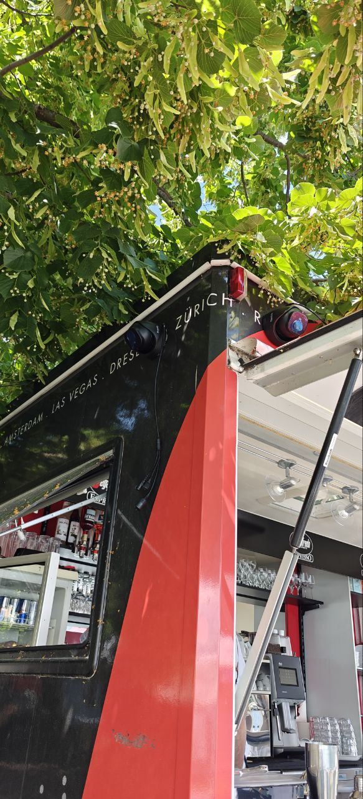

Beachbar Surveillance
Project Overview
This project involved the installation and configuration of a comprehensive surveillance system for a beachside bar. The goal was to ensure robust monitoring of the premises to enhance security and safety for patrons and staff.
What I Did
- Installed 7 high-resolution security cameras strategically placed for maximum coverage.
- Configured a Network Video Recorder (NVR) system for 24/7 recording and remote access.
- Set up secure network protocols to protect video feeds from unauthorized access.
- Provided training to staff on system usage and maintenance.
Project Images
